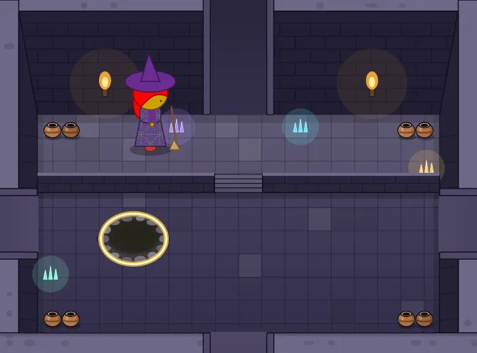

Dress Up reports · ^du_report(22) · 2026-10-26 · work in progress · about Messed Up Dress Up, a game made with M and N · after ^du_report(21)
How Dress Up Is Made
Who decides what goes in the game, how a change reaches the kids, the rules we keep and why, and how the code is laid out. Written for anyone who wants to help, person or AI agent.
Short answers.
- The kids decide what comes next. M and N ask for things; Matthew turns their asks into decisions; an agent builds them.
- A change reaches the kids within minutes. Every finished feature is released at once: a quick check, a new version number, a push. The slower checks run afterwards.
- One rule comes first: 60 frames a second, for everything a player does, on the kids' slow computers too.
- The game is a prototype for Hazel. Features are tried here with real players first, then rebuilt in Hazel as livelits.
- Who decides
- From an ask to the kids' screen
- The first rule: 60 frames a second
- The design rules, and why
- The code in one page
- How we check our work
- Where things live
- For AI agents
Who decides
- M and N, Matthew's kids, are the players and the clients. Most features start as something one of them asked for, or got stuck on. In anything public they are only ever "M" and "N".
- Matthew decides what goes out and how it should look. When he has made a call, it is a rule, and it isn't reopened.
- An agent (Claude, working in this repository) builds, checks and releases, keeps a ticket for every ask on the Hazel Work Dashboard, and writes these reports.
From an ask to the kids' screen
The game is a public web page: whatever is on its main branch is what the kids play. So releasing is just pushing, and it happens as soon as a feature works. The kids like to see progress the same day.
Each version says what changed, in VERSIONS.md and in the game's own ⚙️ Advanced tab, in words a parent can read: what a player sees, with the buttons' own labels. An open copy of the game notices a newer version and offers it as a chip after its version number.
Why check afterwards? The full set of checks takes the better part of an hour. Waiting for it would mean the kids wait too. So only the quick check (does the page's code load?) comes first; the rest runs after, and a version that turns out slow is marked 🚧🐢 in the game itself until the next one fixes it.
The first rule: 60 frames a second
"I want this toy to be fun for my kids before we have fancy things like gaussian blurs running fast. The priority is 60 FPS at all times, for all actions that a game controller does in the scene." Matthew, 2026-10-16.
The kids play on an old black laptop and an old iPad, not only on fast computers. So walking, running, jumping, climbing, going through doors and dragging the friend must stay smooth everywhere. In practice:
- An expensive effect is optional, and off by default. ⚙️ Advanced lists each one, with a button to measure what it costs on your computer.
- A slow computer gets a simpler picture. The game notices it is slow and holds the scenery still while the friend moves.
- 🧪 measures a computer. Its line of numbers is how we compare the kids' devices with ours.
- A cost is found by taking things away one at a time, never by guessing. Most of the time the cost is the browser's painting, not the game's own work.
The design rules, and why
Each of these is a call Matthew made, usually after something went wrong in play.
| Rule | Why |
|---|---|
| A place is a place, not a backdrop | The bar is the tree house and the witch's woods: things move, there is light and depth, and small surprises. Trees come from shared helpers, never lollipops. |
| Connected views agree | A place seen through a window, from far away, or from inside and outside is drawn from the same settings. Otherwise the illusion of one connected world breaks. |
| A new angle is a new drawing | The friend seen from above, or asleep in a tent, is drawn again for that angle, not squashed. And a new view must honour every costume (^du_report(21) shows all 36 checked). |
| Depth is honest | The friend walks behind what stands nearer and in front of what stands farther. Every standing thing knows its depth. |
| The wind is outdoors | Nothing sways inside a room without a reason. |
| Nothing scary unless asked for | Skeletons start off: M found them scary. |
| Every setting shows its label and an emoji, and only where it applies | So a kid can find it, and isn't shown settings that do nothing here. |
| The settings decide the picture | A saved friend draws exactly the same every time. That is what lets us keep an archive of every version and compare drawings byte for byte. |
| Nothing a player made is lost | Resizing a world, or reorganizing the panels, never throws away what a kid built. |
| Every way out goes somewhere | No door to nowhere, always a way back, and no scenery that promises a place that isn't there. |

The code in one page
Plain JavaScript and SVG, about 30 files run in order, no build step: it runs straight from the files, even from a disk. The order matters, because each file may use only what came before it.
| Files | What they hold |
|---|---|
01 – 02 | The settings and their defaults (DEFAULTS, state), and shared helpers. |
03 – 08 | The friend: face, hair, ghost, costumes, underwear, body. |
09 – 15 | The places: houses, castle, castle rooms, outdoors (and the dungeon room), how a place is built and chosen. |
16 – 18 | What stands where and what blocks walking; moving and climbing; drawing it all (draw). |
19 – 24 | Music, the control tabs (TABS), full screen, the heads-up display, save and load. |
25-* | The world designer, scripting (Hazel, JS and Fumola rules), recordings, saved friends. |
26 | Dragging, and starting the game. Last, because it draws the first picture. |
Adding a place means one line in each of a handful of lists (its name, its group, its drawing, the friend's size there, where the friend arrives, its music). Adding a costume means an entry for what it wears and one for each special view. The code's own comments name the ticket behind every choice, so grep "ticket 412" finds the story of any feature.
How we check our work
- Before a release: the page's code is joined and loaded in node. That catches the mistakes that break the whole page.
- After a release: the speed run plays the game on GitHub's computers, walking and dragging through the hardest places, and checks each feature's own test.
- Contact sheets: to check a drawing, the game draws every case (every costume, every look) into one sheet, and we look at all of it at full size. ^du_report(21)'s sheets are made this way.
- Byte for byte: a change that shouldn't alter a picture is checked by drawing every place and costume before and after and comparing the files exactly.
- Gently on the laptop: it shuts down under load, so heavy browser runs happen on GitHub, not here, one job at a time, and test browsers are always muted.
Where things live
- The game: matthewhammer.org/kids-choice-games/dress-up/; its code: github.com/matthewhammer/kids-choice-games.
- What changed: VERSIONS.md. These reports: the Dress Up reports.
- Every past version, in pictures and in music: dress-up-pictures and dress-up-music.
- Licences: the code under Apache 2.0, everything else (pictures, music, words) under CC BY 4.0, credited to "Matthew Hammer and family (M and N)".
For AI agents
This report is the explanation; agent-instructions.md is the short checklist that goes with it: the exact release steps, the names in the code that matter, and the testing traps. Read both before changing anything, and keep both up to date in the same commit as the change that moves them.
Updates
2026-10-26: first draft, published as a work in progress. It replaces most of agent-instructions.md, which was 380 KB of history no person could read (its long version is kept in git, at commit f356855).